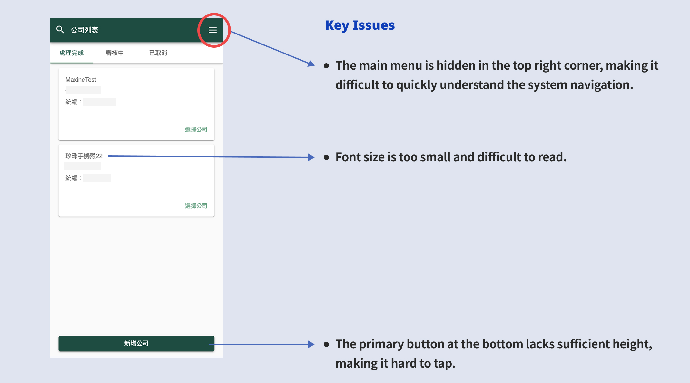
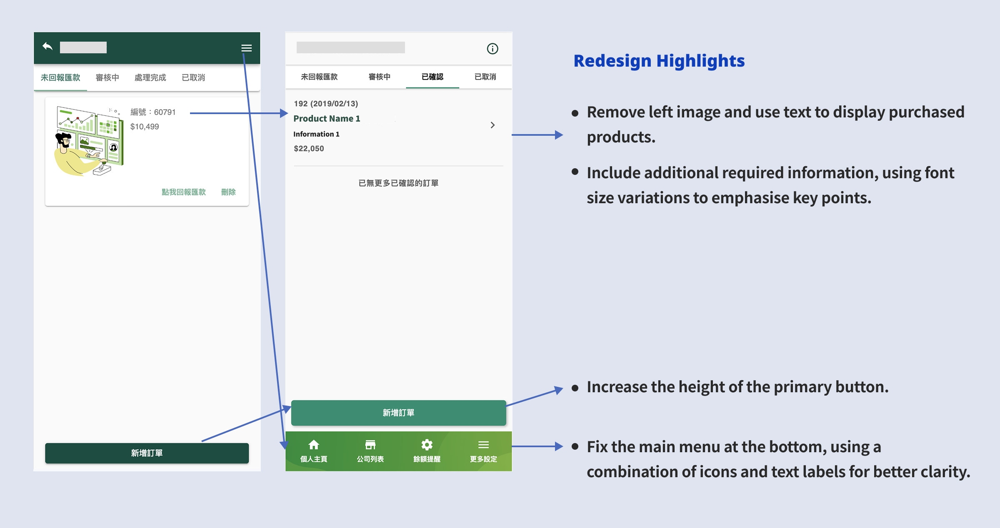
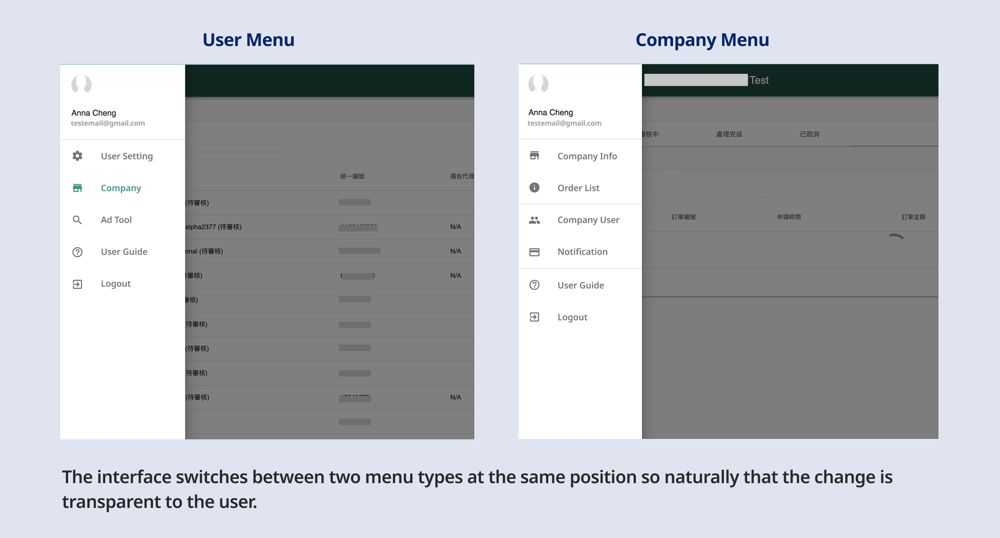
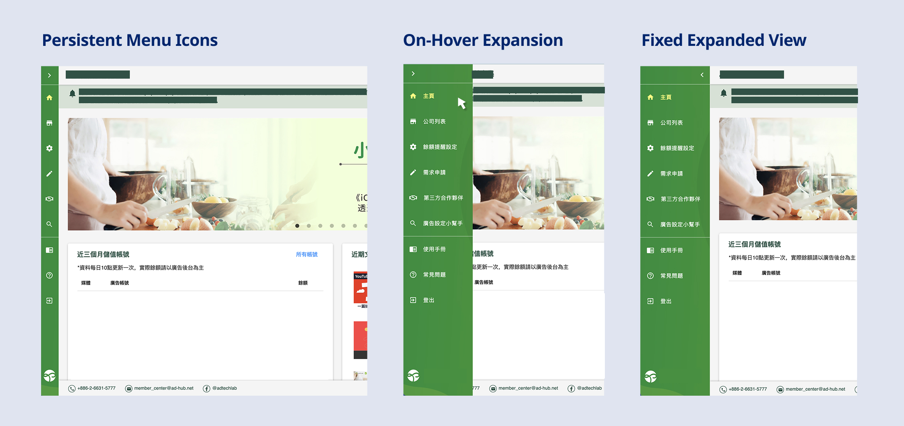
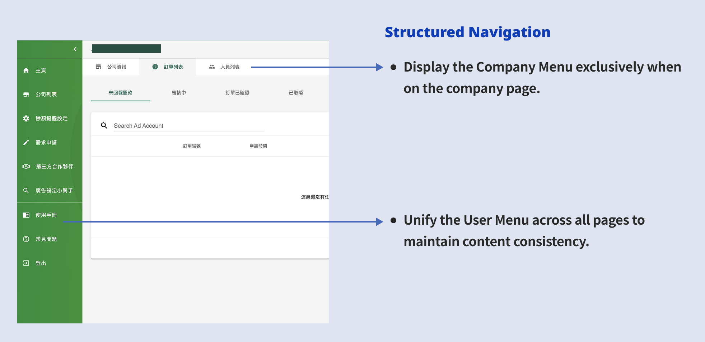

From Data/UX to Redesign
I proactively proposed and led a comprehensive UX research & UI redesign and frontend refactoring of our product. By identifying critical usability bottlenecks and modernising the frontend architecture, these design-driven optimizations increased user satisfaction scores by 45%.
Challenge 1: Mobile Accessibility & Layout
As a data-intensive platform built originally for desktop, we use the same layout to mobile at first. While system complexity grew, this approach faltered and severely degraded the user experience on smaller screens.
Using screen recordings and user surveys, I pinpointed the core friction: poor mobile accessibility caused by interactable areas that were too small.

Solution
To resolve this, I completely overhauled the mobile architecture. I introduced a fixed bottom navigation bar for effortless thumb-reach, refined the information hierarchy by replacing redundant images with structured typography, and significantly increased primary button hit areas. Finally, I implemented a touch-first layout with collapsible data sections, empowering users to effortlessly navigate complex information without feeling overwhelmed.

Validation via Usability Testing
To validate the new layout and flow, I built interactive Figma prototypes and invited four users to conduct task-based usability testing. The testing confirmed the effectiveness of the redesign: all four testers intuitively understood the new flow and completed their assigned tasks smoothly without hesitation.
Challenge 2: Information Architecture & Navigation
The navigation system was a significant source of user friction. The platform relied on two distinct menus that shared the same hidden location and would automatically swap based on the user's current context. This invisible context-switching left users entirely unaware of secondary features, leading to severe navigational confusion.

Solutions
a. Permanent Sidebar Menu
Instead of completely hiding the main menu, the new design pins a collapsed version (icons only) to the left side. Users can simply hover to expand the menu and read the text labels. This approach maintains context and discoverability without sacrificing screen real estate. Post-launch traffic data showed a 20-30% increase in views for the secondary pages located within this menu.

b. Contextual Separation of Navigation
I separated the previously combined Personal and Company menus. Contextual rules were applied so the Personal menu consistently remained on the left, while the Company menu appeared horizontally beneath the Header only when users navigated into a specific company's context. This clear structural divide successfully eliminated user confusion.
